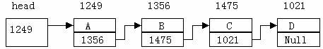

在例7.8中采用了动态分配的办法为一个结构分配内存空间。每一次分配一块空间可用来存放一个学生的数据，我们可称之为一个结点。有多少个学生就应该申请分配多少块内存空间，也就是说要建立多少个结点。当然用结构数组也可以完成上述工作，但如果预先不能准确把握学生人数，也就无法确定数组大小。而且当学生留级、退学之后也不能把该元素占用的空间从数组中释放出来。
用动态存储的方法可以很好地解决这些问题。有一个学生就分配一个结点，无须预先确定学生的准确人数，某学生退学，可删去该结点，并释放该结点占用的存储空间。从而节约了宝贵的内存资源。另一方面，用数组的方法必须占用一块连续的内存区域。而使用动态分配时，每个结点之间可以是不连续的(结点内是连续的)。结点之间的联系可以用指针实现。 即在结点结构中定义一个成员项用来存放下一结点的首地址，这个用于存放地址的成员，常把它称为指针域。
可在第一个结点的指针域内存入第二个结点的首地址，在第二个结点的指针域内又存放第三个结点的首地址，如此串连下去直到最后一个结点。最后一个结点因无后续结点连接，其指针域可赋为0。这样一种连接方式，在数据结构中称为“链表”。
下图为最一简单链表的示意图。

图中，第0个结点称为头结点，存放有第一个结点的首地址，它没有数据，只是一个指针变量。以下的每个结点都分为两个域，一个是数据域，存放各种实际的数据，如学号num，姓名name，性别sex和成绩score等。另一个域为指针域，存放下一结点的首地址。链表中的每一个结点都是同一种结构类型。
例如，一个存放学生学号和成绩的结点应为以下结构：
struct stu
{ int num;
int score;
struct stu *next;
}
前两个成员项组成数据域，后一个成员项next构成指针域，它是一个指向stu类型结构的指针变量。
链表的基本操作对链表的主要操作有以下几种：
1. 建立链表；
2. 结构的查找与输出；
3. 插入一个结点；
4. 删除一个结点；
下面通过例题来说明这些操作。
#define NULL 0
#define TYPE struct stu
#define LEN sizeof (struct stu)
struct stu
{
int num;
int age;
struct stu *next;
};
TYPE *creat(int n)
{
struct stu *head,*pf,*pb;
int i;
for(i=0;i< n;i++)
{
pb=(TYPE*) malloc(LEN);
printf("input Number and Age\n");
scanf("%d%d",&pb->num,&pb->age);
if(i==0)
pf=head=pb;
else pf->next=pb;
pb->next=NULL;
pf=pb;
}
return(head);
}
在函数外首先用宏定义对三个符号常量作了定义。这里用 TYPE表示struct stu，用LEN表示sizeof(struct stu)主要的目的是为了在以下程序内减少书写并使阅读更加方便。结构stu定义为外部类型，程序中的各个函数均可使用该定义。
creat函数用于建立一个有n个结点的链表，它是一个指针函数，它返回的指针指向stu结构。在creat函数内定义了三个stu结构的指针变量。head为头指针，pf为指向两相邻结点的前一结点的指针变量。pb为后一结点的指针变量。
在实际问题中，有些变量的取值被限定在一个有限的范围内。例如，一个星期内只有七天，一年只有十二个月，一个班每周有六门课程等等。若把这些量说明为整型，字符型或其它类型显然是不妥当的。为此，Ｃ语言提供了一种称为“枚举”的类型。在“枚举”类型的定义中列举出所有可能的取值，被说明为该“枚举”类型的变量取值不能超过定义的范围。应该说明的是，枚举类型是一种基本数据类型，而不是一种构造类型，因为它不能再分解为任何基本类型。